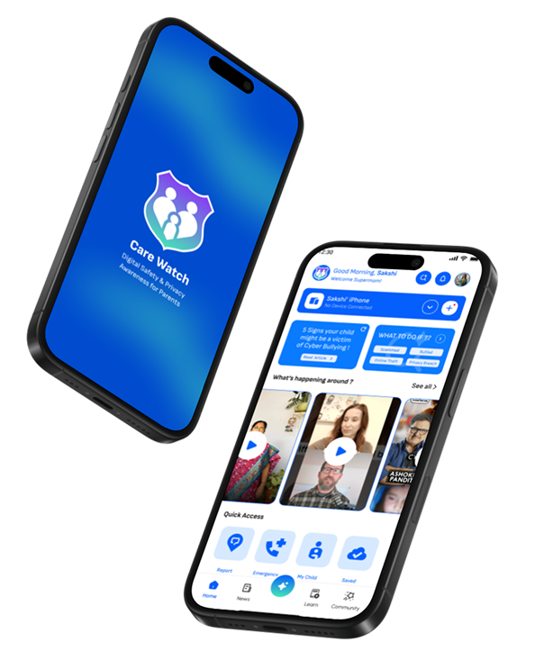
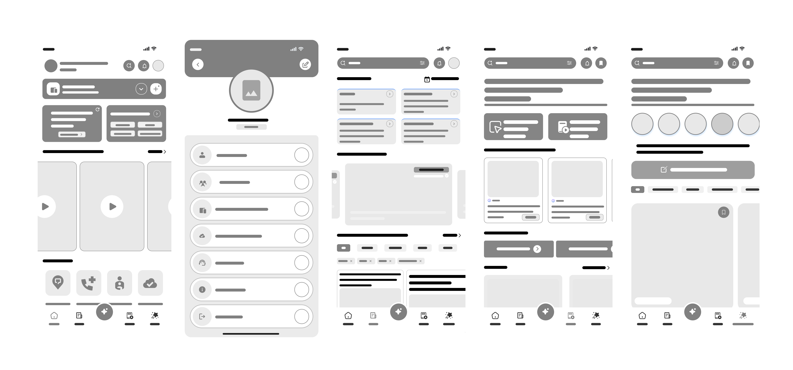

CareWatch
Digital Safety & Privacy Awareness for Parents
Digital Safety & Privacy Awareness for Parents

UX/UI Project
12 Weeks
40+ Screens
CareWatch is an educational platform that empowers parents to protect their children online through actionable guidance. It offers age-appropriate resources, interactive modules like quizzes and tutorials, and real-time alerts on emerging digital threats. Beyond monitoring, CareWatch fosters healthy family communication with conversation starters designed to build digital literacy and trust.
Today, being connected is a natural part of everyday life for children. However, this digital exploration exposes them to risks like malware, cyberbullying, and predators.
Many parents struggle to keep up with these evolving threats, creating a safety gap. CareWatch aims to bridge this by educating parents and empowering them to protect their children's online privacy and security.

Parental guidance is often confined to one device or website, rather than integrated across multiple platforms (apps and web), making consistent monitoring difficult.
Sparse interactive options lead to less engaging digital safety education for families.
Lack of tool tutorials makes it difficult for parents to effectively secure children's devices.
Absence of certified recognition reduces motivation for parents to complete safety training.
Limited access to expert support leaves parents without trusted guidance when issues occur.
Through surveys and interviews, I explored how parents navigate digital risks and what gaps prevent them from effectively protecting their children online.
To understand parents’ digital habits, fears & awareness levels.
To uncover emotional pain points & real-life scenarios.
Unaware of online risks
Struggle to monitor
Low confidence
Need better tools
“My kids are more tech-savvy than me, it's hard to monitor everything.”
- Poonam“Managing screen time and scams simultaneously is a tough balance.”
- ArchanaThe digital ecosystem for children has expanded rapidly, yet very few products offer a holistic, easy-to-understand platform that builds awareness and empowers parents.
There is currently no integrated awareness-driven platform that educates parents about children’s online safety and digital wellbeing.
While individual tools exist, the lack of a cohesive ecosystem leaves parents feeling overwhelmed and underprepared for real-world scenarios.
Designing a parent-centric awareness app that educates and guides parents on the online security and privacy risks their children face today.
During the Define phase, I structured insights into personas and journey maps to clearly define user needs, motivations, and core problems.


Visualizing the path parents take to discover, learn, and implement online safety measures for their children.


Structuring the app's content and navigation to ensure parents can find the tools and information they need quickly and intuitively.

Designing logical paths that allow parents to achieve their safety goals with minimal friction and maximum clarity.
Goal: Access a simple step-by-step guide to teach her child safe digital habits.

Goal: Get regular updates on trending online risks & personalized safety tips for his two kids.

Goal: Receive automatic, age-specific alerts and quickly access emergency guides.

Focusing on clarity and ease of use, I created mid-fidelity wireframes to establish the layout and hierarchy before moving into final designs.

Establishing a trustworthy and approachable visual language through a curated color palette and clear typography hierarchy.

Designing reusable components to ensure a consistent user experience across the entire application.

Transforming the validated wireframes into a polished, user-friendly interface that prioritizes accessibility and trust.

Carewatch successfully bridged the gap between complex digital security and parental intuition, creating a platform that empowers rather than overwhelms.
User confidence increase in identifying online risks during testing.
Designed an interface that is intuitive for both tech-savvy and non-tech-savvy parents.
Created a scalable framework for educational modules on trending privacy risks.
This project reinforced that designing for parents requires a delicate balance of urgency and calm guidance.
When dealing with child safety, every UI element must build trust through transparency and clear communication.
Technical jargon should be translated into actionable guidance that parents can implement immediately.
User feedback during the wireframing phase was critical in refining the information architecture for better discovery.
Visualizing the Carewatch experience across modern devices to showcase the responsiveness and premium feel of the interface.